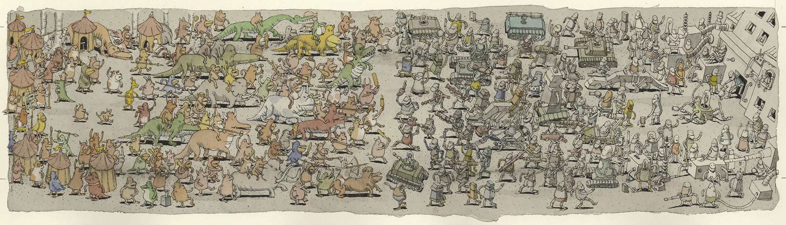

some extended albeit blurry art of mothership
home
other page
these are my three favorite songs of theirs:
We Own The Night
Alex English
Carl Barker
some extended art, but I can't remember the name of the album
